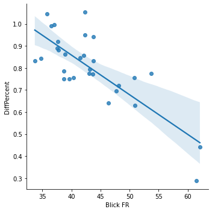

Tops and flops of the month
In a nutshell: what was the best and worst day of the month in the competition for visits between Blick FR and Tribune de Genève?
novembre 2021 daily visitors
In a nutshell: what was the best and worst day of the month in the competition for visits between Blick FR and Tribune de Genève?
Woaw!
On 14.11.2021, Blick FR was closest to Tribune de Genève, with a 28% difference in visits only (that's 51% smaller than average).
This day, we had 61,500 visits (vs 82,300 for Tribune de Genève).
This was our #2 day of the Month in terms of visits.
These were the most trending Twitter topics in Switzerland on that day:
#ITASUI, #italiasvizzera, #LieberTee, Hamilton, Lewis
Well, not so good…
On 30.11.2021, Blick FR was really distanciated by Tribune de Genève, with a 105% difference in visits (that's 25% more than average). This is our worst day in the battle.
This day, we had 42,300 visits (vs 136,300 for Tribune de Genève).
This was our #14 day of the Month in terms of visits.
These were the most trending Twitter topics on that day:
#BTSxAMAs, #OLOM, Payet, #jeuneTalent, #Tatort
For each day, the top news of the days for Switzerland, according to a service called Gnews.io.
Unfortunately, we are not so sure the data is reliable, but the very reliable Google doesn't provide a history of top news.
Linear correlation between # of visits and gap between Blick FR and Tribune de Genève?

Pearson's R: (-0.7877070073050717, 2.392752569660043e-07)